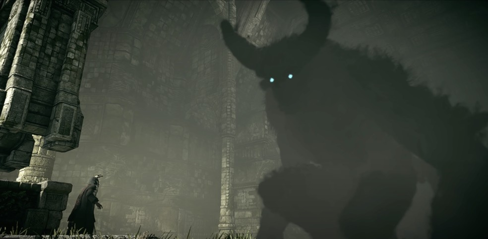

Uma origem distante
O jogo não apresenta uma história completa de Dormin nem detalha todos os acontecimentos que levaram ao seu aprisionamento.
Personagem · A voz do santuário
Dezesseis fragmentos.
Uma promessa na escuridão.
Dormin / pacto
Quando Wander leva Mono ao Santuário da Adoração, Dormin responde ao seu pedido. A entidade afirma que pode trazer a jovem de volta, desde que os dezesseis colossos sejam derrotados.
Há um aviso: o preço pode ser alto. Wander aceita, e a voz passa a orientar sua jornada, indicando cada novo adversário.
A ajuda tem um propósito que ele ainda não compreende. As vitórias que parecem aproximá-lo de Mono também desfazem o aprisionamento de Dormin.
II / O poder dividido
O poder de Dormin foi separado e aprisionado nos colossos. A cada derrota, um fragmento entra no corpo de Wander. No santuário, o ídolo correspondente é destruído.
Explore as criaturas que guardam esses fragmentos.
Dormin / manifestacao
Durante a jornada, Dormin é principalmente uma presença que fala do alto do santuário. Suas vozes sobrepostas reforçam a sensação de uma entidade que não cabe em uma identidade humana comum.
Depois do último colosso, os fragmentos se reúnem em Wander. Dormin assume uma forma gigantesca e escura, com chifres, e se dirige a Emon e seus homens.
O corpo humano que atravessou as Terras Proibidas se torna o meio para o retorno da entidade.
Veja a transformação de Wander ↗IV / A aparência
Quando se manifesta no santuário, Dormin surge como uma figura gigantesca de sombras. Os chifres curvos e os pequenos olhos luminosos se destacam no corpo escuro, cujos contornos parecem se desfazer em névoa.
A captura mostra essa forma dentro do jogo, diante de Emon. A diferença de escala entre os dois reforça a dimensão da entidade.

Dormin / desfecho
Emon lança a espada ancestral na fonte do santuário. Um vórtice de luz absorve Dormin e Wander, enquanto o grupo foge das Terras Proibidas.
Mono desperta. Mais tarde, encontra um bebê com pequenos chifres na fonte esvaziada e o leva consigo, acompanhando Agro até o jardim.
O retorno de Mono acontece, mas Wander já não está ali como antes. O pacto termina com a realização do desejo e uma transformação irreversível para quem o fez.
Conheça o despertar de Mono ↗VI / O que permanece em aberto
O jogo não apresenta uma história completa de Dormin nem detalha todos os acontecimentos que levaram ao seu aprisionamento.
Dormin guia Wander, mas também se beneficia de cada vitória. O pacto reúne o desejo do jovem e o retorno da entidade.
Reduzir Dormin a uma figura inteiramente benevolente ou maligna elimina parte da ambiguidade da história. Suas ações são mostradas; suas motivações não são totalmente explicadas.
Texto baseado nos acontecimentos do jogo. A imagem de Dormin é uma captura do jogo, publicada pelo TechTudo. O selo geométrico da abertura é um elemento gráfico original, não um símbolo oficial.